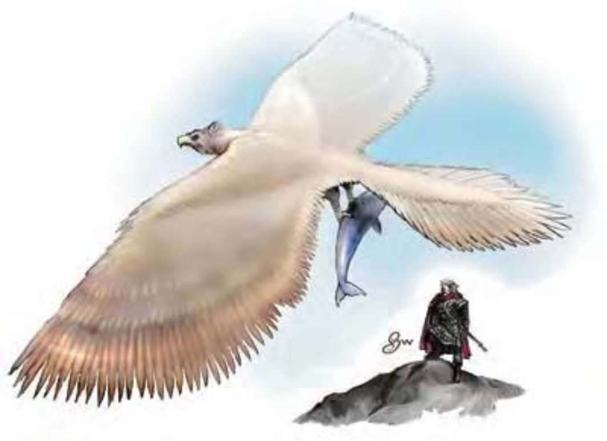

一头巨鸟，大小约等于一栋建筑物。
鹏鸟是栖息在热暖带山脉区中的巨型猛禽，体型大到难以置信，可轻松抓取大型动物（家畜、马甚至大象）。
鹏鸟的浑身毛色呈暗褐或金黄色。也有人曾见过红色、黑色或白色鹏鸟，但通常被视为恶兆。这种庞然大物由鸟喙到尾巴根部约长30英尺，翼展则有80英尺。鹏鸟重约8000磅。
鹏鸟用树木、粗枝、木材之类来筑巢。他们喜欢住在山峰高处，远离其他鹏鸟，以避免猎食领域冲突。他们的狩猎范围为巢穴四周半径10英里内。
鹏鸟由空中进行攻击，从天而降突袭猎物，并用强力勾爪攫取带回巢中喂食雏鸟。鹏鸟孤身时会攻击任何中型以上的可食用生物。鹏鸟夫妇则会共同战斗，并誓死守卫巢穴或幼鸟。
技能：鹏鸟在进行「侦察」检定时具有+4种族加值。
| 生命骰 | 18d8+126 (207HP) |
| 先攻 | +2 |
| 速度 | 20英尺 (4格)、飞行80英尺 (普通) |
| 防御等级 | 17 (-4体型、+2敏捷、+9天生)、接触8、措手不及15 |
| 基本攻击/擒抱 | +13 / +37 |
| 攻击 | 勾爪+21近战 (2d6+12) |
| 全力攻击 | 2勾爪+21近战 (2d6+12) 及啮咬+19近战 (2d8+6) |
| 占据/触及 | 20英尺 / 15英尺 |
| 特殊攻击 | ― |
| 特殊能力 | 昏暗视觉 |
| 豁免 | 强韧+18、反射+13、意志+9 |
| 属性 | 力量34、敏捷15、体质24、智力2、感知13、魅力11 |
| 技能 | 躲藏-3、聆听+10、侦察+14 |
| 专长 | 警觉、空袭、钢铁意志、多重攻击、猛力攻击、攫取、翻转 |
| 环境 | 热暖带山脉 |
| 组织 | 单独或成双 |
| 宝藏 | 无 |
| 阵营 | 总是绝对中立 |
| 进化 | 19-32HD (巨型)；33-54HD (超巨型) |
| 等级修正值 | ― |